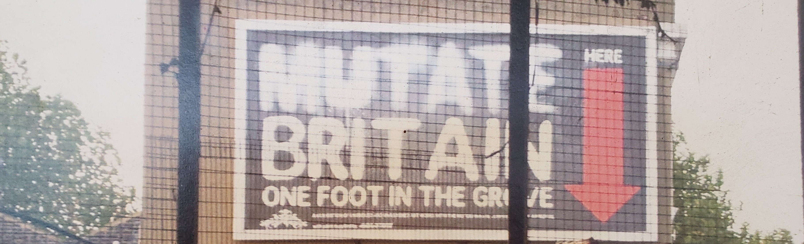

Mirror symmetry for cluster varieties
and representation theory

June 17
th
-21
st
, 2024
King's College London
Home
Registration
Programme
Local Information
Confirmed Speakers
Ian Cavey
Alessio Corti
Xin Fang
Sara Angela Filippini
Bosco Frías Medina
Johannes Hofscheier
Liana Heuberger
Elana Kalashnikov
Alastair King
Chris Manon
Greg Muller
Linhui Shen
Melissa Sherman-Bennett
Charles Wang
Lauren Williams
Ben Wormleighton
Location
All talks will be in the
Anatomy Lecture Theatre (K6.29)
of the King's Building, Strand Campus, King's College London.
Organizers
Konstanze Rietsch, King's College London
:
konstanze.rietsch (at) kcl.ac.uk
Tim Magee, King's College London
:
timothy.magee (at) kcl.ac.uk
Lara Bossinger, UNAM Oaxaca
:
lara (at) im.unam.mx